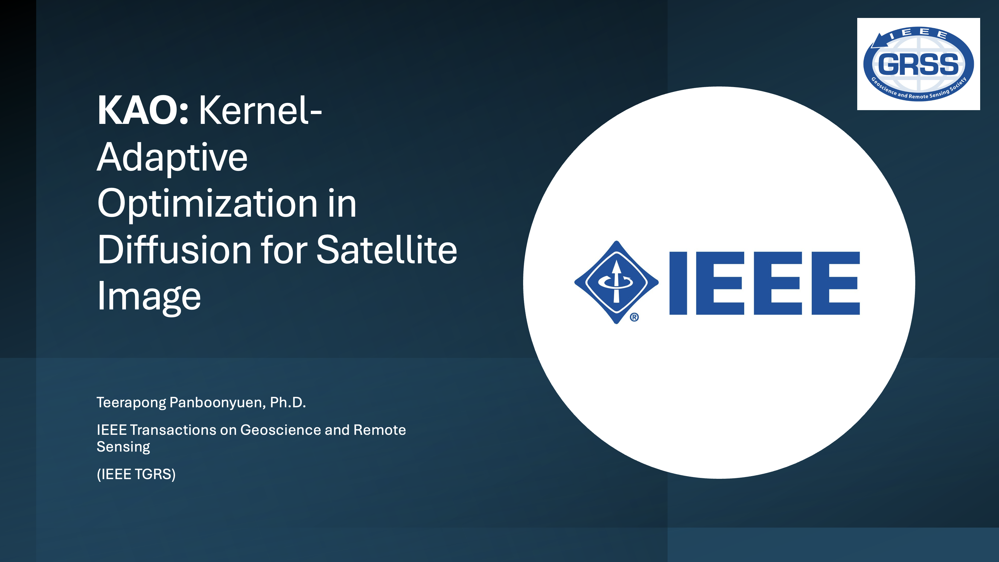

Abstract
In this quick pitch, I’m thrilled to introduce KAO—a Kernel-Adaptive Optimization framework for satellite image inpainting using diffusion models. KAO is specifically designed to tackle challenges in very high-resolution datasets such as DeepGlobe and the Massachusetts Roads Dataset. By optimizing a compact latent space and incorporating explicit forward-backward propagation, KAO achieves stable and precise reconstructions of occluded regions. Its hierarchical Token Pyramid Transformer (TPT) captures multi-scale spatial context, enabling fine-grained, resolution-aware inpainting that balances efficiency with accuracy. Experimental results show that KAO consistently outperforms state-of-the-art methods—including Stable Diffusion, RePaint, LatentPaint, DPS, PSLD, and SatDiff—across metrics like LPIPS, FID, and visual fidelity. This research highlights KAO’s potential to advance remote sensing image restoration, providing reliable, high-quality satellite imagery for urban planning, agriculture monitoring, and environmental analysis. Explore the full project here, and let’s push the boundaries of satellite AI together!

Research Highlight
The Department of Computer Engineering, Chulalongkorn University, has officially featured the research work of Dr. Teerapong Panboonyuen, recognizing his contribution to advancing Artificial Intelligence for satellite image restoration. This recognition highlights an important milestone in developing high-resolution inpainting technologies that support environmental monitoring, urban planning, and agricultural analysis.
The featured research introduces KAO (Kernel-Adaptive Optimization), a novel AI framework designed to restore missing or occluded regions in very high-resolution satellite imagery. High-resolution satellite images often suffer from occlusions caused by clouds, atmospheric effects, or sensor limitations, which can compromise data analysis. KAO addresses these challenges by dynamically adapting kernel operations in diffusion models to produce structurally coherent, high-fidelity reconstructions.
Addressing Challenges in Satellite Image Inpainting
Many existing AI inpainting methods face limitations such as:
- High computational cost from iterative postconditioning processes
- Lack of flexibility when adapting preconditioned models to new datasets
- Difficulty preserving fine structural details in very high-resolution images
While conventional methods may work in controlled scenarios, they struggle to maintain accuracy and structural consistency across diverse satellite imagery.
KAO overcomes these issues by introducing kernel-adaptive optimization within a latent-space diffusion framework, allowing the model to focus on both local details and global context during image reconstruction.
Key Innovations of KAO
The framework incorporates several major technical advancements:
- Latent Space Conditioning: Optimizes a compact latent space for efficient and accurate inpainting without retraining large-scale models.
- Token Pyramid Transformer (TPT): Captures hierarchical, multi-scale spatial information for fine-grained restoration.
- Explicit Forward-Backward Propagation: Improves stability and precision by fusing information during both diffusion passes.
- Adaptive Kernel Modulation: Tailors the denoising process to local context, enhancing reconstruction of roads, buildings, and natural terrain.
- Scalable Performance: Achieves superior quantitative and qualitative results on high-resolution datasets like DeepGlobe and the Massachusetts Roads Dataset.
These innovations ensure that KAO produces reliable, high-quality reconstructions suitable for real-world applications in remote sensing.
Experimental Impact
Extensive experiments demonstrate that KAO:
- Outperforms state-of-the-art methods, including Stable Diffusion, RePaint, LatentPaint, DPS, PSLD, and SatDiff
- Improves LPIPS, FID, and visual fidelity metrics, ensuring structural and textural accuracy
- Efficiently handles real-world occlusions such as clouds, mist, and sensor gaps
These results highlight the framework’s potential to support data-driven decision-making in urban planning, environmental monitoring, and agriculture management.
Advancing AI for Satellite Imagery
This research represents a significant step forward in AI-powered satellite image restoration. By combining kernel-adaptive operations with hierarchical latent features, KAO enables:
- High-resolution, structurally consistent reconstructions
- Scalable deployment for large satellite datasets
- Better insights for remote sensing, environmental studies, and agriculture monitoring
Ultimately, the work demonstrates how advanced AI research can enhance practical applications in geoscience and remote sensing.
Official Resources
Readers interested in exploring the full project, technical details, and research materials can visit:
- 📄 Paper: IEEE TGRS
- 📄 ArXiv: https://arxiv.org/abs/2511.02462
- 🌐 Project Page: https://kaopanboonyuen.github.io/KAO/
- 💻 Code Repository: https://github.com/kaopanboonyuen/KAO
- 🎥 Video Demo:
Teerapong Panboonyuen
My research focuses on leveraging advanced machine intelligence techniques, specifically computer vision, to enhance semantic understanding, learning representations, visual recognition, and geospatial data interpretation.